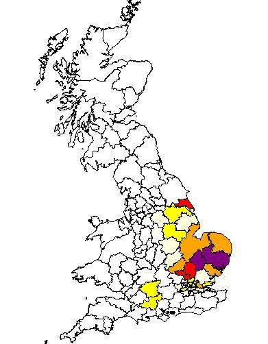

Surname Origin: A name derived from the Old English word Pekke meaning the top of a hill. A name given to someone who lived by such a prominent place.

Our Pecks have been traced back to John and Hannah and their children Francis, Mary, John and Katherine, all born between 1731 and 1743 in Sutton in Ashfield, Nottinghamshire. Francis married Mary Brewell in Mansfield in 1753 and together they had nine children that we are aware of. The youngest son was Thomas, born in Sutton in Ashfield in 1773. Thomas met and married Rebekah Freeman of Farnsfield and they were married in Oxten in 1796. Their first son George was born in 1797 and was followed by Thomas in 1802.
George Peck married Ann Witham in Sutton in Ashfield Nottinghamshire in 1820. George was a Stocking Maker (Framework Knitter) and they had ten children that we know of. Their oldest son Thomas was born in Mansfield Woodhouse Nottinghamshire in 1821 and he too became a Stocking Maker. He was married twice marrying Mary Wittaker in 1845 with whom he had five children before her death in 1870. Thomas remarried in 1871 to Mary Warren, daughter of Irish immigrants. By this time the family had relocated from North Nottinghamshire to Nottingham. It was in Pomfret Street Nottingham that Mary Ann gave birth to the first of their three children Eliza Peck in 1871.
Current Research :